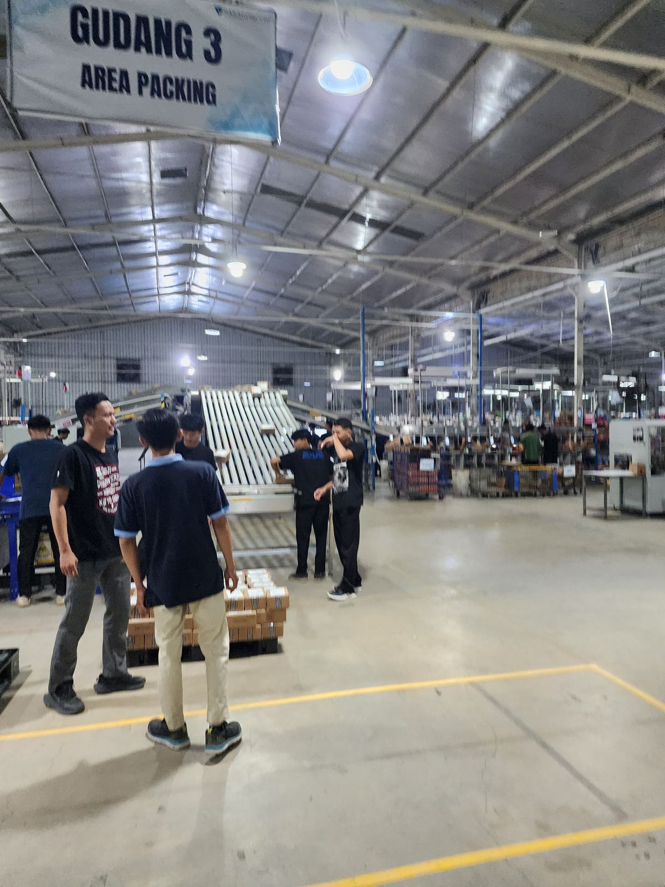
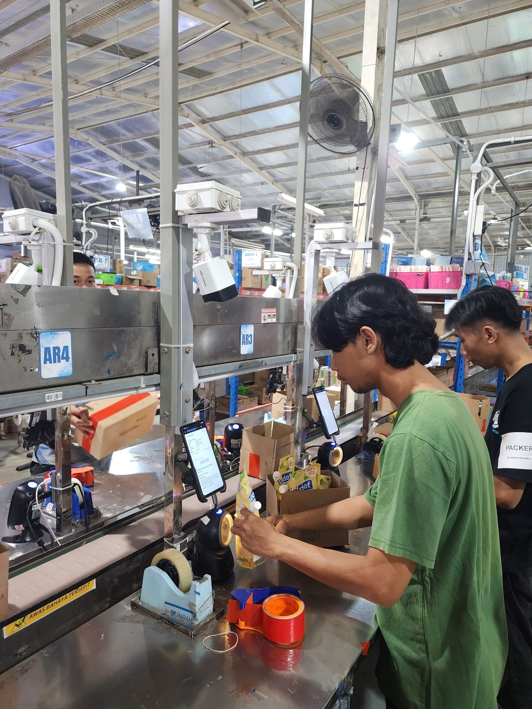
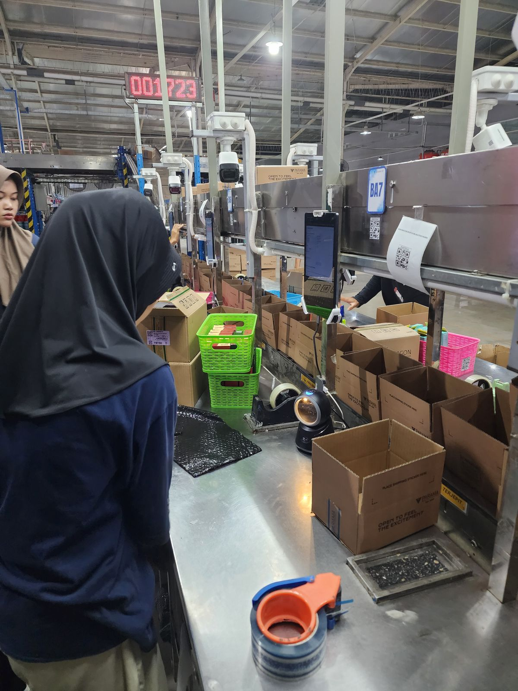
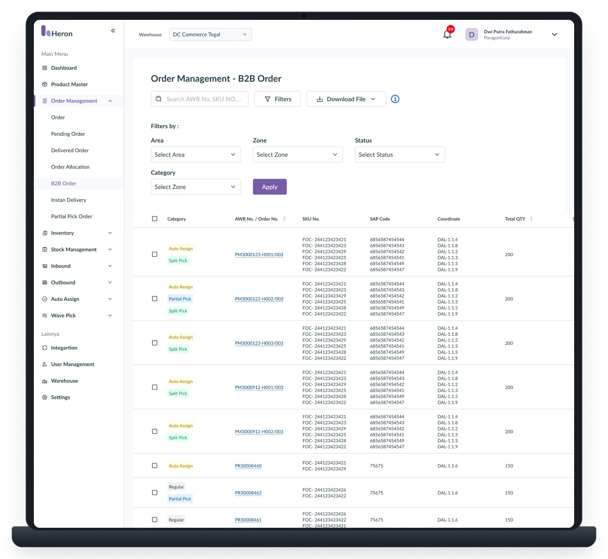
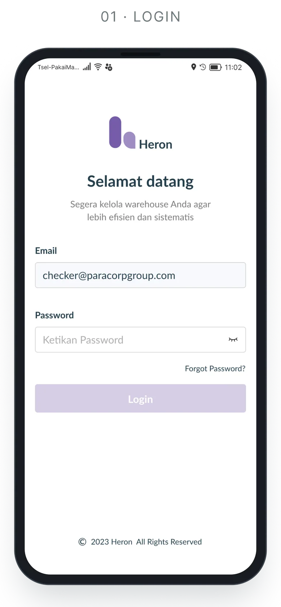
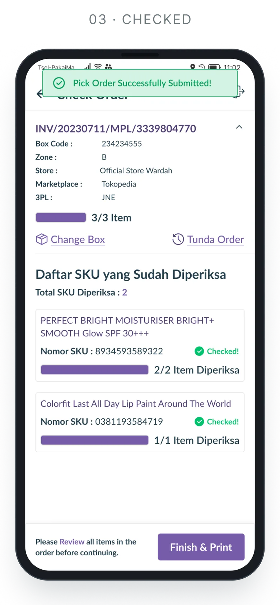
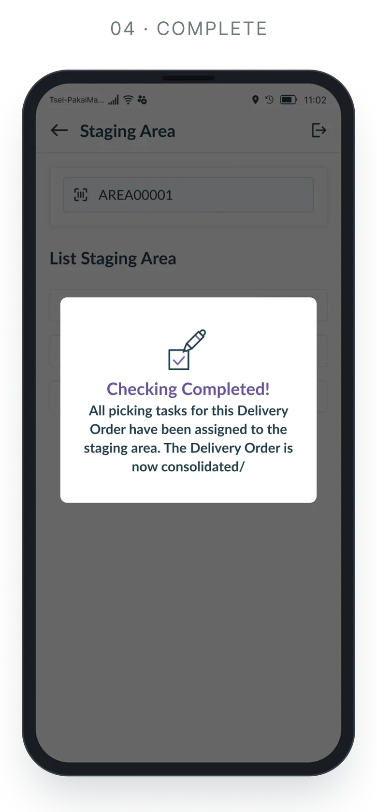
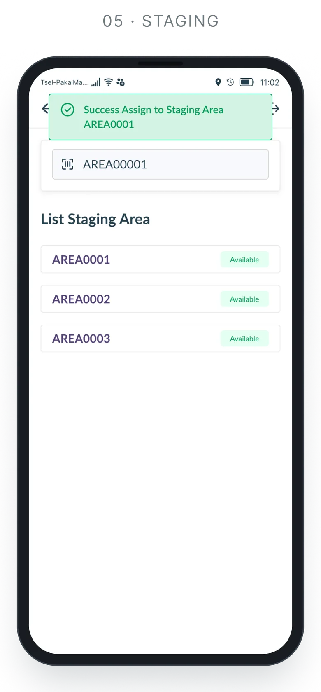

WMS System
An internal enterprise Warehouse Management System designed to streamline core logistics operations — from order allocation, B2B split picking and staging to final dispatch — supporting complex fulfillment scenarios across a large-scale distribution network.

One connected flow for the whole warehouse floor — from allocation to dispatch.
End-to-end integration
Successfully connected fragmented warehouse processes into a unified, operational design system.
B2B fulfillment flexibility
Enabled operators to seamlessly execute complex scenarios, including B2B Split Picking, Partial Pick and Partial Fulfillment, without breaking operational traceability.
Operational scalability
Designed a structured and modular interface architecture capable of accommodating evolving business logic and warehouse expansion.
50+ screens designed for admins, pickers, checkers and dispatchers.
The problem
Enterprise warehouse operations involve multiple interconnected processes, from allocating orders and assigning pickers to managing picking, staging, fulfillment and dispatch.
As operational complexity grew, warehouse teams struggled with handling large B2B orders that required splitting across different inventory zones, pickers or time frames. They needed a unified system that could handle flexible B2B split picking, partial fulfillment and real-time operational workflows while maintaining high daily efficiency on the warehouse floor.
Who it’s for
Warehouse Admin
Manages operational configurations, order allocations, B2B fulfillment rules and system exceptions.
Warehouse Operator
Executes daily ground activities including B2B split picking, replenishment, staging and order preparation.
Warehouse Supervisor
Monitors operational progress, picker workload distribution, edge cases and overall warehouse execution.
What I designed
B2B order split picking & allocation
Intuitive workflows allowing admins and system logic to split complex B2B orders into manageable picking tasks based on item locations, picker availability or stock constraints.
Flexible fulfillment
Modular flows supporting Split Picking, Partial Pick, Partial Fulfillment and operational exceptions.
End-to-end warehouse operations
Task-focused interfaces for Replenishment, Staging Area, Dispatcher, Proxy Store and Auto-Assign mechanisms.
System integration & error handling
Operational UI supporting SAP outbound flows, retry mechanisms and system failure states.
How I approached it
Find the real pain
Worked closely with warehouse operators, supervisors and product managers to map actual ground flows, B2B order splitting edge cases, technical constraints and floor bottlenecks.
Draft to prototype
Translated complex operational logic into clear user flows, wireframes and interactive prototypes.
Qualitative usability validation
Conducted qualitative usability testing via Maze on key operational scenarios (including Child Order Dispatching & Cancel Process Dispatch) to validate flow clarity and task ease before developer handoff.
Iterate & hand over
Refined designs based on user feedback and technical feasibility, documented states and edge-case scenarios, and collaborated closely with developers through build and QA.
On the floor
Field research on the warehouse floor: watching packers, checkers and dispatchers at work before designing for them.




- 01 / 04Packing area, Warehouse 3Where B2B orders are packed and handed to dispatch.
- 02 / 04Packing lineEvery station runs on a phone, a scanner and a camera.
- 03 / 04Inbound deskBefore: SKU checks living in spreadsheets.
- 04 / 04Packer stationOrders come in by the thousand — every tap has to count.
B2B split picking
A simplified view of the B2B split-picking process the screens are built around: one parent order is split into child orders, picked in parallel, consolidated in staging and dispatched as one.
- 01 · System
B2B order in
A parent order arrives from SAP.
- 02 · Admin
Allocate
Stock is checked per zone and inventory location.
- 03 · System
Split picking
The parent becomes child orders by zone, picker or stock.
Child A · zone AChild B · zone BChild C · partial - 04 · Picker
Pick in parallel
Each child order is auto-assigned to its own picker.
- 05 · Checker · Packer
Check & pack
Every SKU is scanned and verified per child order.
- 06 · Dispatcher
Staging area
Children wait for their siblings to consolidate.
- 07 · Dispatcher
Dispatch
All in: one delivery order for the parent. Not all in: partial fulfilment ships the ready children, the rest stays pending.
- 08 · System
Outbound sync
Status goes back to SAP, with retry on failure.
Screens
A showcase of key workflows across the operational system, including Order Allocation, B2B Split Picking, Picker Management, Partial Fulfillment, Replenishment, Staging and Dispatch.
The screens highlight how complex warehouse rules and operational edge cases are translated into clear, task-focused interfaces for high-volume daily operations. With 50+ screens designed, only a selection is shown here.





